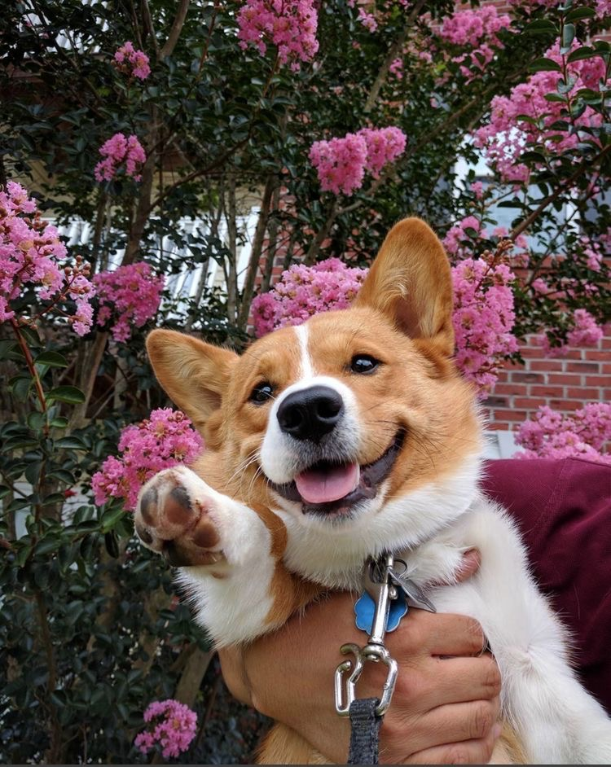

The Pembroke Welsh Corgi is a cattle herding dog breed that
originated in Pembrokeshire, Wales. It is one of two breeds known
as a Welsh Corgi. Pembroke Welsh Corgis descended from the Spitz
family of dogs. The other is the Cardigan Welsh Corgi,which
descend from the Teckel family of dogs, which also produced the
Dachshund.
General
Pembroke Welsh Corgis are famous as the preferred breed of Queen
Elizabeth II,who has owned more than 30 Royal corgis during her
reign.Although these dogs have been favoured by British royalty
for more than seventy years, among the British public they have
recently fallen into decline in terms of popularity and demand.
However, they remain very popular in the United States. Cities
such as New York,Boston, Los Angeles, and San Francisco hold
annual "Corgi Meetups" in which hundreds of dogs and their owners
congregate to spend the day.
The Pembroke Welsh Corgi has been ranked 11th in Stanley Coren's
The Intelligence of Dogs, which states that the breed is
considered an excellent working dog. Pembroke Welsh Corgis were
ranked 11th most popular breed of dog in 2020 according to the
American Kennel Club.
History
The Pembroke Welsh Corgi lineage has been traced back as far as 1107
AD.It is said that Flemish weavers brought the dogs with them as they
traveled to reside in Wales. Some popular stories give Corgis a
creation myth connected to fairies. One story states that two children
were running through a forest and stumbled upon the funeral of a
fairy. The mourning fairies gave the two children two small corgi
puppies and the children took them home, thus giving the breed
popularity.[citation needed] Stories also state that Corgis played the
role of war horses for fairies before they became herding dogs for
humans. At the base of the haunches of Corgis, there is a line of
slightly rougher fur called the fairy saddle. Rather than Welsh lore,
this may be a modern myth sparked by corgi breeders of the 1940s.
Pembrokes and Cardigans first appeared together in 1925 when they were
shown under the rules of The Kennel Club in Britain. The Corgi Club
was founded in December 1925 in Carmarthen, Carmarthenshire.[21] It is
reported that the local members favored the Pembroke breed, so a club
for Cardigan enthusiasts was founded a year or so later.Both groups
have worked hard to ensure the appearance and type of breed are
standardized through careful selective breeding.Pembrokes and
Cardigans were officially recognized by the Kennel Club in 1928 and
were initially categorized together under the single heading of Welsh
Corgis before the two breeds were recognized as separate and distinct
in 1934. Corgi at 4 months, when they are starting to get their
typical fawn colour. The ears look too big compared to their head.
Pembroke Welsh Corgis are becoming more popular in the United States
and rank 20th (24th) in American Kennel Club registrations, as of 2015
(2012). However, corgis are now listed as a "vulnerable" breed in the
United Kingdom; the decline has been said to be due to a 2007 ban on
tail-docking (the practice of cutting off the animal's tail) in the
U.K., as well as the lack of breeders in the U.K.In 2009, the corgi
was added to The Kennel Club's "At Watch" list of British breeds when
annual registrations numbered between 300 and 450. In 2014, the breed
was put on the Club's "Vulnerable Native Breeds" list when
registrations dropped under 300.In 2018, the breed came off the
"At-Risk" list with 456 puppies registered in December 2017. The
Kennel Club has credited the renewed interest in the breed to the
popular Netflix television series, The Crown, and others.The Pembroke
Welsh Corgi has also appeared in the American television Brooklyn
Nine-Nine as the pet dog of Captain Raymond Holt and Kevin M. Cozner
and is shown to be extremely loyal. Ein, a Corgi with human-level
intelligence, is one of the 5 main characters in the TV show Cowboy
Bebop.
Health
Pembrokes have an average life expectancy of 12–15 years.Pembroke
Welsh Corgis are achondroplastic, meaning they are a "true dwarf"
breed. As such, their stature and build can lead to certain
non-inherited health conditions, but genetic issues should also be
considered. Commonly, Pembrokes can suffer from monorchidism, Von
Willebrand's disease, hip dysplasia, degenerative myelopathy (DM), and
inherited eye problems such as progressive retinal atrophy. Genetic
testing is available for Pembroke Welsh Corgis to avoid these issues
and enhance the genetic health pool. Pembrokes are also prone to
obesity given a robust appetite, characteristic of herding group
breeds.

Activities
Pembroke Welsh Corgis can compete in dog agility trials, obedience,
showmanship, flyball, tracking, and herding events. Herding instincts
and trainability can be measured at noncompetitive herding
tests.Corgis, despite their dwarfism giving the illusion of small slow
legs, can reach up to 25 mph if they are healthy and fit. This is
because Corgis tend to use more upper body strength to run than most
dogs, giving them enhanced abilities with such activities as agility
and herding and racing.
Royal corgis
Main article: Royal corgis
At a young age, the Queen's passion for this breed started when her
father, King George VI, brought home their first royal corgi who was
later named Dookie.The Queen ceased breeding corgis around 2012 so as
not to leave any behind after she dies; her last corgi, Willow, died in
April 2018. She was gifted two new corgi pups by her family in 2021. On
April 3 2019, the film
The Queen's Corgi was released.